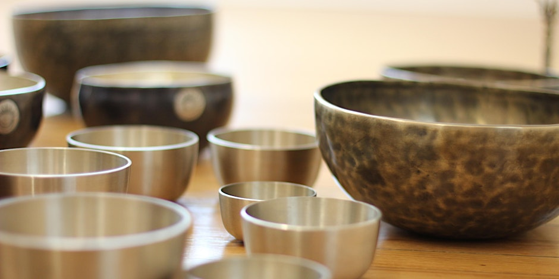
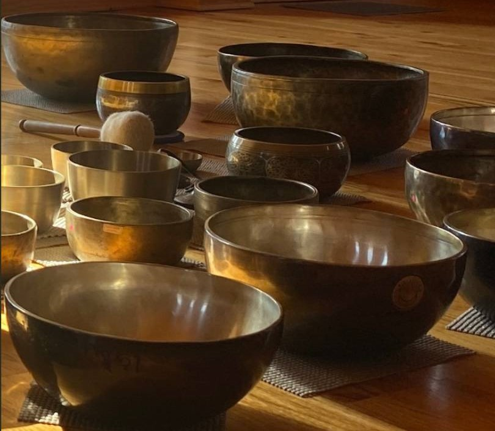
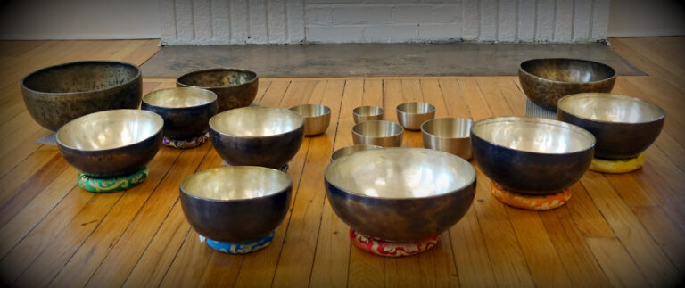

Weekly sound healing, sound bath meditations, and community events.
Intimate space setting.
A somatic journey where ancient wisdom meets modern well-being. Soothing Himalayan tones wash over you — quieting the mind, softening the body, settling the spirit.
Vivek guides each session with over 40 handcrafted singing bowls, layered with binaural beats to support deep relaxation and nervous system regulation. It's a multidimensional soundscape — richer and more textured than a traditional sound bath.
No experience needed. Come as you are — curious, tired, seeking, or just ready for a reset.
Sessions are booked through Acuity Scheduling. Select your quantity, preferred date and time — and you're set.
Book OnlineSessions are non-refundable. Any unused ticket is allocated to our scholarship program to support those who need it.
Questions? Email somaticsoundsvst@gmail.com

Give yourself time to settle in, remove shoes, and find your mat. The space is calm and welcoming.
You'll spend most of the session lying comfortably on a yoga mat. Blankets and eye cover are provided.
( Chair option available )
Each soundscape unfolds over 45–50 minutes. There's nothing for you to do — just receive.
After the session, take your time returning. Many people feel deeply relaxed — almost dreamlike. That's normal.
The session continues after you leave. Calm, clarity, or a quiet shift may surface hours or days later.

Loose, warm layers. You'll be lying still, so comfort is key.
No experience needed.
A free monthly gathering held on the third Wednesday of every month. Guided meditation and live sound healing — open to everyone in the community.
Co-facilitated by Vivek and Omri. Hosted via Meetup. A simple, accessible reset to your week.
View on Meetup
Vivek performed an hour long session. I relaxed and my husband, who has Parkinson's Disease, experienced total relief from tremors for 2–3 hours. That doesn't sound like much but it's amazing that vibrations and sound can have that effect. My husband wants to visit Vivek again!
I have been attending Vivek's sound baths fairly consistently for the last 3 months. These sessions have decreased some of my anxieties significantly. I have also noticed a marked decrease in pain from a very old injury. I would recommend visiting Somatic Sounds to anyone in search of emotional or physical healing.
The Group Sound Healings are wonderful. Vivek skillfully customized his services and bowl placement which facilitated a deeper experience. The vibrations penetrated to my core inducing a profound out of body experience. I emerged feeling like I had a physical upgrade, greater mental clarity, and joyfulness.
We absolutely loved our sound bath journey. Our Facilitator, Vivek used about 30 handcrafted singing bowls and lulled both of us into a deep theta brain state. I even fell asleep and felt rejuvenated after, with some of the best sleep that night. What a beautiful hour of symphonic relaxation.
Vivek's intuitive ability to empower you to help you find what you need within is shown again and again in each session. This is not a passive listening experience. It transcends the moment and takes you exactly where you need to go to find what you need within yourself.
A profound, transformative experience. Vivek's skill and intuition created an intensely powerful sound healing session, both physically and spiritually. If you're seeking deep relaxation, inner connection, or energetic healing, I highly recommend booking a session. I'll definitely be back!
Vivek is a healer inside and out! His sessions will change your life, your vibration, your energy and more. So thankful to have discovered his offering, which has simply put me on a more beautiful path of wellbeing!
I've been attending regular sound baths and they've made a huge difference in my anxiety levels. I feel calmer, more grounded, and better able to handle everyday stress. It's become an essential part of my wellness routine.
Vivek creates a sanctuary space of sound. I went into the session feeling some emotional weight, and left lifted and lightened. I felt a significant shift after bathing in a pool of soothing sacred tones. I highly recommend booking sound healing sessions with Vivek.
Everything people usually wonder before their first session — and a few things worth knowing once you've been a few times.
Sound healing is a practice that uses intentional sound and vibration to support your physical, emotional, and spiritual well-being. It begins from a simple idea: the body has a natural rhythm, and the pace of daily life — stress, tension, depletion — can pull it out of tune. Sound healing offers a way back. In a session, you simply lie down and let the tones of Himalayan singing bowls move through you. There's nothing to do, nothing to figure out.
People come to sound healing for many different reasons, and its benefits are felt across body, mind, and spirit. Most often, people notice:
You don't have to arrive with a goal. Whatever you bring, the sound tends to meet it.
My bowls are hand-hammered in Nepal from bronze — an alloy of copper and tin — using metalworking techniques passed down through generations. Because each one is shaped by hand, no two are identical, and every bowl produces a complex, layered tone you can feel in the body, not just hear. Unlike crystal bowls, which tend to ring with a single clear tone, Himalayan bowls carry rich overtones that move and shift as the bowl is played. Together, those layered tones and textures create an immersive soundscape that surrounds you completely.
That depth is what makes them so effective for somatic work. The vibrations penetrate deeply, and when bowls are played around or over the body, you feel the sound as much as hear it. Every bowl in my collection has been chosen by hand for its tone and character.
None at all. Sound baths are open to all levels — whether you're a seasoned meditator, exploring a new path to relaxation, or simply seeking stress relief. Just show up, lie down, and let the sound meet you where you are.
A group sound bath is a journey through sound with over 40 handcrafted Himalayan singing bowls. You'll arrive, settle in, and find a comfortable spot lying down. Once everyone is settled, the room quiets and the session begins. This is more than a sound bath — it weaves sound bath and sound healing into one immersive, somatic journey. There's nothing for you to do: just rest and let the sound carry you.
Every person arrives with something different. Some come seeking relief from anxiety, depression, or chronic pain. Others are working through addiction recovery, grief, or burnout. Many come for grounding, energetic balance, or simply to reset. And plenty come just to relax and support their overall wellness.
You don't need a reason. Curiosity is enough.
Sound healing is a complementary practice. It works alongside other forms of care, not in place of them. Many people find it a steady, supportive part of how they tend to themselves.
Some of what people have come to sessions with:
No. It's a complementary practice. It works alongside other forms of care, not instead of them.
There's no rule — but most people find the effect deepens with regular sessions. Once a month is a steady rhythm for relaxation, grounding, and overall well-being.
People often come weekly or bi-weekly when they're working with something more specific, such as:
Trust your body. It will tell you when it's time to return.
Yes. Custom sound healing sessions are available for corporate wellness, healthcare settings, schools, fitness and recovery programs, senior wellness, and retreats.
Reach out at somaticsoundsvst@gmail.com to talk about what you're envisioning.
Still have questions? Email somaticsoundsvst@gmail.com
If you're navigating a chronic condition or disability and cost is a barrier, or if you're living with Parkinson's, dementia, autism, or chronic illness, and that's you or someone you love, please reach out.
Private sound healing or VST session. Reach out.